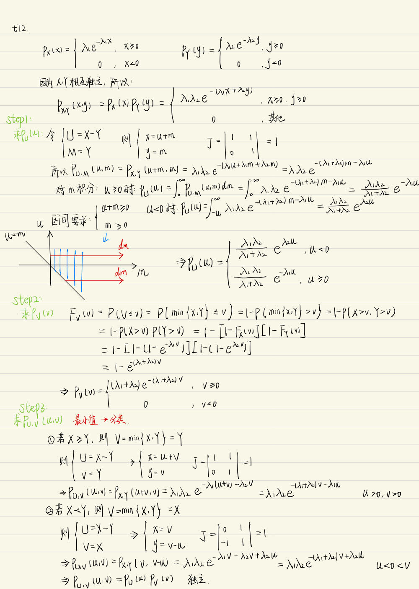

概率论期末复习习题(4)
记录一下备考时的练习题目。
t70
设随机变量 $X$ 和 $Y$ 相互独立, $X$ 服从参数为 1 的指数分布, $Y$ 的概率分布为 $P\{Y=-1\}=p, P\{Y=1\}=1-p$, 令 $Z=XY$.
（1） 求 $Z$ 的概率密度;
（2）求 $p$ 为何值时， $X$ 与 $Z$ 不相关.
（3） 问 $X$ 与 $Z$ 是否相互独立?
解析
（1） $Z$ 的分布函数为
当 $z<0$ 时, $F_Z(z)=p P\{X \geqslant-z\}+(1-p) \cdot 0=p \mathrm{e}^z$;
当 $z \geqslant 0$ 时, $F_Z(z)=p \cdot 1+(1-p) P\{X \leqslant z\}=1-(1-p) \mathrm{e}^{-z}$.
所以 $Z$ 的概率密度为
（2）
令 $\operatorname{Cov}(X, Z)=0$, 解得 $p=\dfrac{1}{2}$. 所以当 $p=\dfrac{1}{2}$ 时, $X$ 与 $Z$ 不相关.
(3) 因为
所以 $P\{X \leqslant 1, Z \leqslant-1\} \neq P\{X \leqslant 1\} P\{Z \leqslant-1\}$, 故 $X$ 与 $Z$ 不相互独立.
t71
设 $X, Y$ 为两个随机变量, 且 $E X=2, E Y=1, \operatorname{Var}(X)=4, \operatorname{Var}(Y)=25, \rho_{XY}=-\dfrac{3}{5}$, 求 $E[X(X+Y-2)]$.
解析
解得 $E(XY)=-4$ 再代入上式，得 $E[X(X+Y-2)]=0.$
t72
设随机变量 $\mathrm{X}$ 和 $\mathrm{Y}$ 相互独立, 分别服从参数为 $\lambda_1, \lambda_2$ 的指数分布, 证明随机变量 $\mathrm{U}$ $=\mathrm{X}-\mathrm{Y}$ 和 $\mathrm{V}=\min \{\mathrm{X}, \mathrm{Y}\}$ 相互独立.
解析

t73
默写大数定律和中心极限定理
答案
见《知识点总结》$\S4.3、\S4.4.$
t74
设 $\left\{X_i\right\}$ 是独立同分布的随机变量序列, 且 $X_i \sim U(0,1)$, 令 $\displaystyle Y_n=\left(\prod_{i=1}^n X_i\right)^{\frac{1}{n}}$ 证明: $\ln Y_n \xrightarrow{P} C$, 并求出该常数.
解析
$\displaystyle \ln Y_n=\dfrac{1}{n}\sum_{i=1}^n \ln X_i$
由于 $\left\{X_i\right\}$ 是独立同分布的随机变量序列, 则 $\left\{\ln X_i\right\}$ 也是独立同分布的随机变量序列。
$\displaystyle E\left(\ln X_i\right)=\int_0^1\ln xdx=-1$
由辛钦大数定律得: $\displaystyle \ln Y_n=\frac{1}{n} \sum_{i=1}^n \ln X_i \xrightarrow{P} \frac{1}{n}\sum_{i=1}^nE\left(\ln X_i\right)=-1$
$C=-1.$
t75
设 $\left\{X_n\right\}$ 为独立的随机变量序列, 其中 $X_n$ 服从参数为 $\sqrt{n}$ 的泊松分布, 试问 $\left\{X_n\right\}$是否服从大数定律?
解析
所以由马尔可夫大数定律知 $\left\{X_n\right\}$ 服从大数定律.
t76
设 $\left\{X_n\right\}$ 为独立同分布的随机变量序列, 其共同分布为
试问 $\left\{X_n\right\}$ 是否服从大数定律?
解析
因为
即 $E\left(X_n\right)$ 存在, 所以由辛钦大数定律知 $\left\{X_n\right\}$ 服从大数定律.
t77
在伯努利试验中, 事件 $A$ 出现的概率为 $p$, 令
证明 $\left\{X_n\right\}$ 服从大数定律.
解析
$\left\{X_n\right\}$ 为同分布随机变量序列, 其共同分布为
且 $E\left(X_n\right)=E\left(X_n^2\right)=p^2$, 从而 $\operatorname{Var}\left(X_n\right)=p^2\left(1-p^2\right) \leqslant 1$, 又当 $|i-j| \geqslant 2$ 时, $X_i$ 与 $X_j$ 独立，所以
由施瓦茨不等式：
于是有
即马尔可夫条件成立, 故 $\left\{X_n\right\}$ 服从大数定律.
t78
某型号螺丝钉的质量是相互独立且同分布的随机变量, 其期望为 $50 \mathrm{~g}$, 标准差 5 克,则 100 个该型号得螺丝钉质量不超过 $5.1 \mathrm{~kg}$ 的概率近似为？
解析
设 $\displaystyle Y=\sum_{i=1}^{100} X_i$由题意得, 各螺丝质量独立同分布, 由中心极限定理值, 其质量近似服从正态分布，即： $Y\sim N\left(5,0.05^2\right)$ (单位:千克)
进而计算有:
t79
设某生产线上组装每件产品的时间服从指数分布, 平均需要 $10 \mathrm{~min}$, 且各件产品的组装时间是相互独立的.
(1) 试求组装 100 件产品需要 $15 \mathrm{~h}$ 至 $20 \mathrm{~h}$ 的概率;
(2) 保证有 $95 \%$ 的可能性, 问 $16 \mathrm{~h}$ 内最多可以组装多少件产品?
解析
记 $X_i$ 为组装第 $i$ 件产品的时间 (单位: $\min$ ), 则由 $X_i \sim \operatorname{Exp}(\lambda), E\left(X_i\right)=1 / \lambda=$ 10 , 知 $\operatorname{Var}\left(X_i\right)=1 / \lambda^2=100$.
（1）根据题意所求概率如下, 再用林德伯格一莱维中心极限定理可得
（2）设 $16 \mathrm{~h}$ 内最多可以组装 $k$ 件产品. 则根据题意可列出概率不等式
再用林德伯格－莱维中心极限定理可得
由此查表得 $\dfrac{960-10 k}{10 \sqrt{k}} \geqslant 1.645$, 从中解得 $k=81$.
t80
一家有 500 间客房的大旅馆的每间客房装有一台 $2 \mathrm{~kW}$ (千瓦) 的空调机. 若开房率为 $80 \%$, 需要多少千瓦的电力才能有 $99 \%$ 的可能性保证有足够的电力使用空调机?
解析
记
则 $X_i \sim b(1,0.8)$, 由此得 $Y=X_1+X_2+\cdots+X_{500} \sim b(500,0.8)$. 设共有 $k \mathrm{~kW}$ 的电力可供使用, 根据题意可列不等式
再用棣莫弗一拉普拉斯中心极限定理和修正项可得
或
由此查表得 $\dfrac{k-799}{8 \sqrt{5}} \geqslant 2.33$, 从中解得 $k \geqslant 840.68$, 取 $k=841 \mathrm{~kW}$ 即可.这表明: 该旅馆每天需要 $841 \mathrm{~kW}$ 电力, 才能以 $99 \%$ 的把握保证空调机用电.
t81
某保险公司多年的统计资料表明, 在索赔户中被盗索赔户占 $20 \%$, 以 $X$ 表示在随意抽查的 100 个索赔户中因被盗向保险公司索赔的户数.
(1) 写出 $X$ 的分布列;
(2) 求被盗索赔户不少于 14 户且不多于 30 户的概率的近似值.
解析
(1) $X$ 服从 $n=100, p=0.2$ 的二项分布 $b(100,0.2)$, 即
(2) 利用棣莫弗一拉普拉斯中心极限定理并修正项，有
这表明: 被盗索赔户在 14 与 30 户之间的概率近似为 0.9437 .
t82
某产品的合格品率为 $99\%$, 问包装箱中应该装多少个此种产品, 才能有 $95 \%$ 的可能性使每箱中的合格品多于 $100$ 个。
解析
设包装中有几个产品. X为合格品数 $\quad X \sim B(n, 0.99)$
则 $E(x)=0.99 \pi \quad \operatorname{Var}(x)=0.99 \times 0.01 \times n$
由中心极限定理: $X$ 近似服从 $N(0.99 n, 0.99 \times 0.01 \times n)$
t83
有一批建筑房屋用的木柱, 其中 $80 \%$ 的长度不小于 $3 \mathrm{~m}$, 现从这批木柱中随机地取出 100 根，问其中至少有 30 根短于 $3 \mathrm{~m}$ 的概率是多少?
解析
设 $X$ 为 100 根木柱中长度不小于 $3 \mathrm{~m}$ 的根数, 则 $X \sim b(100,0.8)$. 利用棣莫弗一拉普拉斯中心极限定理, 所求概率为